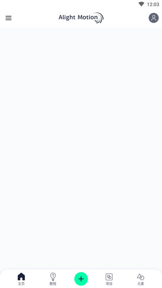
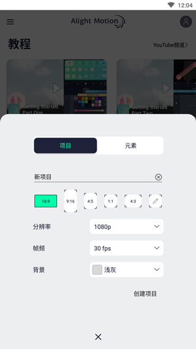

手机也能做出专业转场：Alight Motion 新手从零实战
从安装到导出，带着你在手机上完成第一条带转场效果的短视频，全程不跳步。
这篇教程走完，你就能在手机上独立完成一条带转场和视觉效果的短视频——Alight Motion 作为目前移动端最完整的视频动效工具之一，它的官网上有完整的功能列表，但你不用再翻了，从建项目到导出成品，每一步都给你标清楚在哪点、预期看到什么。

准备：先确认两件事
动手前花一分钟核对前置条件，省得中途卡壳才发现根本跑不起来。
系统版本：Android 6.0 起步。老机器装不上不是安装包的问题，别反复重试浪费时间。如果是 iOS 端，直接在应用商店搜就行，版本覆盖范围更广。
存储空间：安装包约 139 MB，装完加上缓存和工程文件，建议至少留 2 GB 空闲。这个数字看起来大，但后期做复杂效果的时候才会发现缓存吃空间很快——我见过有人卡到导出失败才去清理。
安装包获取：优先走正规渠道装，下载之前确认来源可靠。安装完打开设置里的「关于」页面核对版本号，包名应该是 com.alightcreative.motion，不对的话基本是山寨，赶紧卸载。
第一步：新建项目——比例、分辨率、帧率
打开应用，主页点中间的大按钮新建项目，会弹出配置对话框。这三个参数决定了成片的基础素质，别随手乱选。

比例：想发抖音选 9:16 竖屏，想发 B 站或 YouTube 选 16:9 横屏，想做方形画布（比如小红书封面）选 1:1。这个后面虽然能改，但改了会拉伸或裁剪已有素材，一开始就选对省很多麻烦。
分辨率：1080p 够用。别一上来就冲 4K——手机屏幕也看不出区别，但后期加效果和导出都会慢一大截，存储空间也扛不住。素材本身是 720p 的话，工程分辨率就跟着素材走，不会糊也不会浪费算力。
帧率：30fps 是通用值，做卡点视频选 60fps 会更顺滑，但同样更吃性能。萌新从 30fps 开始就好。
填完点确定，进入编辑器主界面。
第二步：导入素材——三种路径，按需选
编辑器打开后是空白时间线，底部有一排功能分页。先把素材请进来。
最常用的入口是时间线区域的加号按钮。点一下弹出添加面板，里面分五类：图像和视频、音频、形状、文字、绘制。每导入一个素材，时间线上就多一条图层，这个对应关系要记住——后面所有操作都是围绕图层来的。
批量素材的时候别一个个从加号走，直接在文件管理器或相册里选中素材，用系统「分享」菜单发给应用，秒进工程。
如果跨工程要复用同一段素材，进「项目」板块找你之前导入过的媒体，直接拖进来就行，不用重复导入。
导入后的第一件事：素材进了时间线别急着叠效果，先做两个检查。一是对齐画布——视频或图片尺寸和工程画布不一致时，缩放铺满或挪位置，别等导出了才发现素材偏出画面；二是核对时长——确认素材起止点对，长度够不够用。素材层底子没打好，后期返工成本极高。
第三步：叠效果——积木思维，不要堆
这是整个教程里最核心也最容易翻车的环节。应用的效果系统官方叫「可定制的积木式效果」——一百多个基础效果，单个都是简单原材料，两三个叠起来才是成品视效。
选中目标图层（视频、图片、形状、文字都行），底部面板切到效果分页，点添加，从分类列表里挑。模糊、扭曲、颜色、风格化这些分类先逛一圈，对效果家族有个整体印象。
添加后面板会出现该效果的参数滑杆，边拖边看预览。这里有个关键点：效果的每个参数都能打关键帧。模糊从 0 动到 20 就是失焦转场，发光强度随节拍脉动就是卡点光效，马赛克逐格增大就是隐私渐隐。效果参数的关键帧操作和图层变换属性完全一样——把播放头挪到时间点，调参数，自动生成关键帧。参数太多记不住的话，翻alight motion文档比自己试错快。
叠加顺序决定画面。图层上可以叠多个效果，从上到下依次计算，顺序不同结果不同。典型思路：底层铺「色彩校正」定基调，中层加风格化（颗粒、扫描线），顶层补「发光」收光晕。同一个效果可以加两次用不同参数，比如双重模糊先粗后细，比单次模糊更有层次。
叠加列表里可以拖动调整顺序、逐个开关做对比——画面突然变脏的时候，逐个关闭定位元凶，大概率是某个效果叠过头了。
第四步：导出成品
做完效果，点右上角的导出按钮。先在预览里完整跑一遍，别暂停帧好看就急着导出——很多动效的问题只有在播放状态下才看得出来。
导出设置里选好分辨率和帧率，和工程一致就行，不用额外调整。导出过程中别退出应用，等进度条走完会自动弹出分享面板，直接发或存本地都可以。

新手最容易翻车的三个地方
效果拉满变廉价。强度滑杆宁小勿大，三成强度常常刚刚好。模糊拉到顶画面直接糊成一锅粥，发光拉到顶整个素材像被灯泡照——效果的质感来自克制，不是堆料。改完参数一定在完整速度下预览。
素材尺寸不匹配。几千乘几千像素的长图直接丢进来，预览能卡成 PPT。先裁剪到接近画布尺寸再导入，或者用缩放工具快速适配。
音频没对齐就开工。做卡点视频的话，先把音乐铺进时间线、打好节拍书签，再往上面铺画面。别反过来先堆画面再找音乐——节奏感会乱掉，返工也麻烦。
往下还能玩什么
矢量形状和手绘功能值得深入。应用支持贝塞尔曲线编辑，配合触控笔在平板上画、在平板上动画一气呵成。描边动画是 logo 揭示的经典手法——给描边参数打关键帧，让图形像被笔画出来一样「生长」出来。再进阶一点，试试用父子级绑定把元素组织成角色关节，做简单的动画人物也不是不行。
想跟同好交流或看看别人的工程怎么叠效果的话，GitHub 上资料最全，Gitee 和 GitCode 对国内网络更友好。